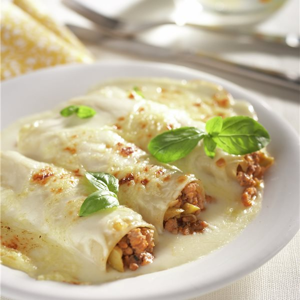

Canelones Caseros
Deliciosos canelones caseros rellenos de una mezcla de carne y queso, bañados con una rica salsa de tomate. ¡Una receta tradicional que siempre gusta!
Ingredientes
- 12 placas de canelones
- 300 g de carne picada (ternera o cerdo)
- 1 cebolla picada finamente
- 1 diente de ajo picado
- 250 g de ricotta o queso ricotta
- 100 g de queso rallado (mozzarella o parmesano)
- Salsa bechamel (opcional)

Instrucciones
- Cocer las placas de canelones: Cocina las placas de canelones según las instrucciones del paquete, escúrrelas y resérvalas.
- Preparar el relleno: En una sartén con un poco de aceite de oliva, sofríe la cebolla y el ajo. Añade la carne picada y cocina hasta que se dore. Agrega el tomate triturado, salpimienta y cocina durante 10 minutos.
- Mezclar con el queso: Deja enfriar la mezcla de carne y tomate, luego añádela al queso ricotta y al huevo. Mezcla bien hasta obtener una masa homogénea.
- Rellenar los canelones: Rellena las placas de canelones con la mezcla preparada.
- Hornear: Coloca los canelones rellenos en una fuente para horno. Cubre con salsa bechamel o salsa de tomate. Espolvorea con queso rallado y hornea a 180°C durante 20 minutos o hasta que estén dorados.
Consejos
- Puedes hacer el relleno con pollo o verduras si prefieres una opción más ligera.
- Añadir un toque de albahaca o orégano fresco a la salsa de tomate resalta el sabor.
Disfruta de estos deliciosos canelones caseros, ideales para una comida reconfortante y sabrosa.